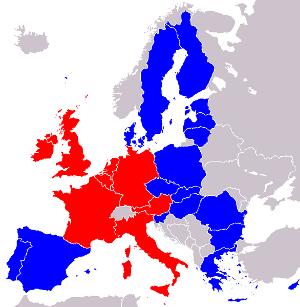
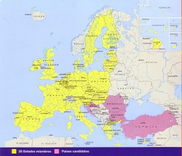

În prezent, Uniunea are 28 membri, dintre care șase membri fondatori din 1958:
Belgia
Franța
Germania
Italia

Luxemburg
Olanda
Alte 22 state au aderat succesiv:
1973:
Danemarca
Irlanda
Regatul Unit
1981:
Grecia
1986:
Portugalia
Spania
1995:
Austria
Finlanda

Suedia
2004:
Cipru
Estonia
Letonia
Lituania
Malta
Polonia
Cehia
Slovacia
Slovenia
Ungaria
2007:
Bulgaria
România
2013:
Croația